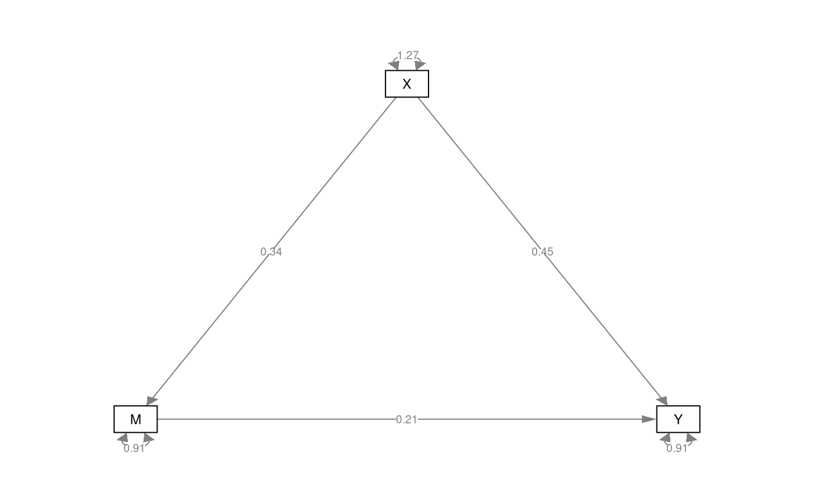
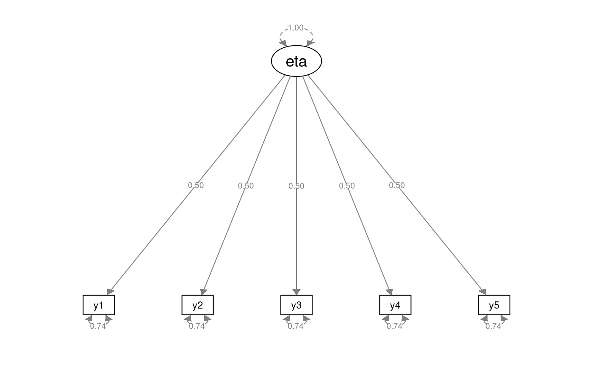

R/ram.R
ram_Sigmatheta.RdDerives the model-implied variance-covariance matrix \( \boldsymbol{\Sigma} \left( \boldsymbol{\theta} \right) %(\#eq:sem-Sigmatheta) \) using the Reticular Action Model (RAM) notation.
ram_Sigmatheta(A, S, filter)
| A |
|
|---|---|
| S |
|
| filter |
|
Returns the model-implied variance-covariance matrix
\(\boldsymbol{\Sigma} \left( \boldsymbol{\theta} \right)\)
derived from the A, S, and filter matrices.
The model-implied variance-covariance matrix \( \boldsymbol{\Sigma} \left( \boldsymbol{\theta} \right)\) as a function of Reticular Action Model (RAM) matrices is given by $$ \boldsymbol{\Sigma} \left( \boldsymbol{\theta} \right) = \mathbf{F} \left( \mathbf{I} - \mathbf{A} \right)^{-1} \mathbf{S} \left[ \left( \mathbf{I} - \mathbf{A} \right)^{-1} \right]^{\prime} \mathbf{F}^{\prime}$$ where
\(\mathbf{A}\) represents asymmetric paths (single-headed arrows), such as regression coefficients and factor loadings.
\(\mathbf{S}\) represents symmetric paths (double-headed arrows), such as variances and covariances.
\(\mathbf{F}\) represents the filter matrix used to select the observed variables.
\(\mathbf{I}\) represents the identity matrix.
The dimensions of the matrices are as follows:
$$ \mathbf{A}_{p \times p}, \\ \mathbf{S}_{p \times p}, \\ \mathbf{I}_{p \times p}, \\ \mathbf{F}_{k \times p}, \\ \boldsymbol{\Sigma} \left( \boldsymbol{\theta} \right)_{k \times k} $$
where
\(k\) number of observed variables
\(q\) number of latent variables
\(p\) number of observed and latent variables, that is \(k + q\)
\(\mathbf{I}\) is an identity matrix, meaning the diagonal elements are ones, and the off-diagonal elements are zeroes. Since \(\mathbf{I}\) has the same dimensions as \(\mathbf{A}_{p \times p}\), and \(\mathbf{S}_{p \times p}\), the function derives \(\mathbf{I}\) automatically.
\(\mathbf{F}\) is a filter matrix. The number of columns \(p\) represent the number of observed and latent variables. The number of rows represent the number of observed variables. The off-diagonal elements are set to zero. The diagonal elements are set to zero or one. Setting the \(k\)-th diagonal element to one filters in the variable that corresponds to that position.
McArdle, J. J. (2013). The development of the RAM rules for latent variable structural equation modeling. In A. Maydeu-Olivares & J. J. McArdle (Eds.), Contemporary Psychometrics: A festschrift for Roderick P. McDonald (pp. 225--273). Lawrence Erlbaum Associates.
McArdle, J. J., & McDonald, R. P. (1984). Some algebraic properties of the Reticular Action Model for moment structures. British Journal of Mathematical and Statistical Psychology, 37 (2), 234--251.
Other SEM notation functions:
ram_M(),
ram_S(),
ram_mutheta(),
ram_res(),
ram_sigma2()
library(lavaan)#>#>library(semPlot)#> #> #> #>#----------------------------------------------------------------------------- # Simple mediation model with observed variables------------------------------ # The variables in the model are X, M, and Y. # All three are observed variables. #----------------------------------------------------------------------------- alpha <- 0.3385926 beta <- 0.4510391 tauprime <- 0.2076475 sigma2X <- 1.2934694 sigma2epsilonM <- 0.9296694 sigma2epsilonY <- 0.9310601 A <- matrix(data = 0, nrow = 3, ncol = 3) A[2, 1] <- alpha A[3, 1] <- beta A[3, 2] <- tauprime S <- diag(c(sigma2X, sigma2epsilonM, sigma2epsilonY)) filter <- diag(3) colnames(A) <- c("X", "M", "Y") rownames(A) <- c("X", "M", "Y") colnames(S) <- c("X", "M", "Y") rownames(S) <- c("X", "M", "Y") colnames(filter) <- c("X", "M", "Y") rownames(filter) <- c("X", "M", "Y") Sigma <- ram_Sigmatheta(A = A, S = S, filter = filter) Sigma#> X M Y #> X 1.2934694 0.4379592 0.6743464 #> M 0.4379592 1.0779591 0.4213722 #> Y 0.6743464 0.4213722 1.3227136#----------------------------------------------------------------------------- # Simple mediation model with observed variables------------------------------ # and latent variable error terms--------------------------------------------- # The same mediation model can be parameterized by explicitly # including the error terms epsilonM and epsilonY in the matrices. # The variables in the model are X, M, Y, epsilonM, and epsilonY. # X, M, and Y are observed variables. # epsilonM, and epsilonY are latent variables. #----------------------------------------------------------------------------- A <- matrix(data = 0, nrow = 5, ncol = 5) A[2, 1] <- alpha A[2, 4] <- 1 A[3, 1] <- beta A[3, 2] <- tauprime A[3, 5] <- 1 S <- diag(c(sigma2X, 0, 0, sigma2epsilonM, sigma2epsilonY)) filter <- matrix(data = 0, nrow = 3, ncol = 5) filter[1, 1] <- 1 filter[2, 2] <- 1 filter[3, 3] <- 1 colnames(A) <- c("X", "M", "Y", "epsilonM", "epsilonY") rownames(A) <- c("X", "M", "Y", "epsilonM", "epsilonY") colnames(S) <- c("X", "M", "Y", "epsilonM", "epsilonY") rownames(S) <- c("X", "M", "Y", "epsilonM", "epsilonY") colnames(filter) <- c("X", "M", "Y", "epsilonM", "epsilonY") rownames(filter) <- c("X", "M", "Y") Sigma <- ram_Sigmatheta(A = A, S = S, filter = filter) Sigma#> X M Y #> X 1.2934694 0.4379592 0.6743464 #> M 0.4379592 1.0779591 0.4213722 #> Y 0.6743464 0.4213722 1.3227136# model specification model <- " M ~ X Y ~ X + M X ~~ X M ~~ M Y ~~ Y " # model fitting fit <- sem( model, sample.cov = Sigma, sample.nobs = 50 ) # results summary(fit, fit.measures = TRUE, standardized = TRUE)#> lavaan 0.6-6 ended normally after 13 iterations #> #> Estimator ML #> Optimization method NLMINB #> Number of free parameters 6 #> #> Number of observations 50 #> #> Model Test User Model: #> #> Test statistic 0.000 #> Degrees of freedom 0 #> #> Model Test Baseline Model: #> #> Test statistic 24.956 #> Degrees of freedom 3 #> P-value 0.000 #> #> User Model versus Baseline Model: #> #> Comparative Fit Index (CFI) 1.000 #> Tucker-Lewis Index (TLI) 1.000 #> #> Loglikelihood and Information Criteria: #> #> Loglikelihood user model (H0) -214.150 #> Loglikelihood unrestricted model (H1) -214.150 #> #> Akaike (AIC) 440.300 #> Bayesian (BIC) 451.772 #> Sample-size adjusted Bayesian (BIC) 432.939 #> #> Root Mean Square Error of Approximation: #> #> RMSEA 0.000 #> 90 Percent confidence interval - lower 0.000 #> 90 Percent confidence interval - upper 0.000 #> P-value RMSEA <= 0.05 NA #> #> Standardized Root Mean Square Residual: #> #> SRMR 0.000 #> #> Parameter Estimates: #> #> Standard errors Standard #> Information Expected #> Information saturated (h1) model Structured #> #> Regressions: #> Estimate Std.Err z-value P(>|z|) Std.lv Std.all #> M ~ #> X 0.339 0.120 2.824 0.005 0.339 0.371 #> Y ~ #> X 0.451 0.129 3.491 0.000 0.451 0.446 #> M 0.208 0.142 1.467 0.142 0.208 0.187 #> #> Variances: #> Estimate Std.Err z-value P(>|z|) Std.lv Std.all #> X 1.268 0.254 5.000 0.000 1.268 1.000 #> .M 0.911 0.182 5.000 0.000 0.911 0.862 #> .Y 0.912 0.182 5.000 0.000 0.912 0.704 #># One-factor CFA model-------------------------------------------------------- # The variables in the model are eta, y1, y2, y3, y4, y5. # eta is a latent variable. y1 to y5 are observed variables. #----------------------------------------------------------------------------- A <- matrix(data = 0, ncol = 6, nrow = 6) loadings <- 0.5 # tau equivalence for (i in 2:6) { A[i, 1] <- 0.5 } S <- diag(c(1, 0.75, 0.75, 0.75, 0.75, 0.75)) filter <- diag(nrow(A) - 1) filter <- cbind(0, filter) colnames(A) <- c("eta", "y1", "y2", "y3", "y4", "y5") rownames(A) <- c("eta", "y1", "y2", "y3", "y4", "y5") colnames(S) <- c("eta", "y1", "y2", "y3", "y4", "y5") rownames(S) <- c("eta", "y1", "y2", "y3", "y4", "y5") colnames(filter) <- c("eta", "y1", "y2", "y3", "y4", "y5") rownames(filter) <- c("y1", "y2", "y3", "y4", "y5") Sigma <- ram_Sigmatheta(A = A, S = S, filter = filter) model <- " eta =~ NA * y1 + y2 + y3 + y4 + y5 eta ~~ 1 * eta " # model fitting fit <- sem( model, sample.cov = Sigma, sample.nobs = 100 ) # results summary(fit, fit.measures = TRUE, standardized = TRUE)#> lavaan 0.6-6 ended normally after 10 iterations #> #> Estimator ML #> Optimization method NLMINB #> Number of free parameters 10 #> #> Number of observations 100 #> #> Model Test User Model: #> #> Test statistic 0.000 #> Degrees of freedom 5 #> P-value (Chi-square) 1.000 #> #> Model Test Baseline Model: #> #> Test statistic 45.758 #> Degrees of freedom 10 #> P-value 0.000 #> #> User Model versus Baseline Model: #> #> Comparative Fit Index (CFI) 1.000 #> Tucker-Lewis Index (TLI) 1.280 #> #> Loglikelihood and Information Criteria: #> #> Loglikelihood user model (H0) -684.078 #> Loglikelihood unrestricted model (H1) -684.078 #> #> Akaike (AIC) 1388.155 #> Bayesian (BIC) 1414.207 #> Sample-size adjusted Bayesian (BIC) 1382.624 #> #> Root Mean Square Error of Approximation: #> #> RMSEA 0.000 #> 90 Percent confidence interval - lower 0.000 #> 90 Percent confidence interval - upper 0.000 #> P-value RMSEA <= 0.05 1.000 #> #> Standardized Root Mean Square Residual: #> #> SRMR 0.000 #> #> Parameter Estimates: #> #> Standard errors Standard #> Information Expected #> Information saturated (h1) model Structured #> #> Latent Variables: #> Estimate Std.Err z-value P(>|z|) Std.lv Std.all #> eta =~ #> y1 0.497 0.123 4.041 0.000 0.497 0.500 #> y2 0.497 0.123 4.041 0.000 0.497 0.500 #> y3 0.497 0.123 4.041 0.000 0.497 0.500 #> y4 0.497 0.123 4.041 0.000 0.497 0.500 #> y5 0.497 0.123 4.041 0.000 0.497 0.500 #> #> Variances: #> Estimate Std.Err z-value P(>|z|) Std.lv Std.all #> eta 1.000 1.000 1.000 #> .y1 0.742 0.132 5.620 0.000 0.742 0.750 #> .y2 0.742 0.132 5.620 0.000 0.742 0.750 #> .y3 0.742 0.132 5.620 0.000 0.742 0.750 #> .y4 0.742 0.132 5.620 0.000 0.742 0.750 #> .y5 0.742 0.132 5.620 0.000 0.742 0.750 #>